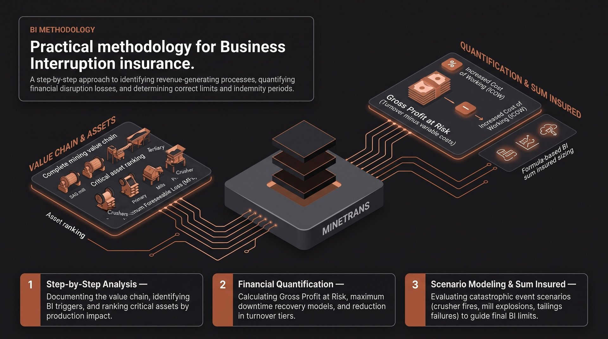

A Practical Methodology for Business Interruption Insurance
A step-by-step approach to identifying a mine's revenue-generating processes, quantifying potential financial losses from disruption, and determining an appropriate insurance limit and indemnity period.

1. Understand the Mining Operation
Document the complete mining value chain:
- Exploration (if applicable)
- Drilling and blasting
- Loading and hauling
- Crushing and screening
- Processing / beneficiation
- Tailings management
- Stockpiling
- Rail / road transport
- Port / export facilities
Identify: annual production (tons), commodity sold, revenue streams, major customers, critical assets.
2. Identify Business Interruption Triggers
Determine events that could stop or reduce production: fire, explosion, flood, slope failure, conveyor collapse, processing plant damage, power failure, tailings dam incident, equipment breakdown (if insured), natural catastrophes.
3. Identify Critical Assets
Rank equipment according to impact on production. Example:
| Asset | Production Impact | Replacement Time |
|---|---|---|
| Primary crusher | 100% | 10 months |
| SAG mill | 100% | 14 months |
| Ball mill | 60% | 8 months |
| Main conveyor | 90% | 7 months |
| Substation | 100% | 9 months |
These assets generally dictate the required indemnity period.
4. Determine Maximum Foreseeable Loss (MFL)
Estimate the worst realistic insured event — e.g. fire destroys the processing plant, production stops completely, rebuilding takes 16 months. This becomes the basis of the BI scenario.
5. Calculate Gross Profit at Risk
The insurance definition of Gross Profit differs from accounting gross profit.
Variable costs often include royalties, freight, export charges, fuel linked directly to production, consumables directly related to output.
Fixed costs remain insured: salaries, administration, debt servicing, depreciation (depending on policy), lease costs, security, maintenance staff.
| Item | Value (USD) |
|---|---|
| Annual revenue | 500 million |
| Variable costs | 180 million |
| Gross Profit | 320 million |
6. Determine Maximum Downtime
Estimate debris removal, engineering, procurement, manufacturing, shipping, customs, construction, commissioning, ramp-up. Example:
| Activity | Months |
|---|---|
| Investigation | 1 |
| Design | 2 |
| Procurement | 6 |
| Shipping | 3 |
| Installation | 3 |
| Commissioning | 2 |
| Total | 17 months |
Choose an indemnity period longer than the expected recovery.
7. Estimate Reduction in Turnover
| Month | Production | Revenue Loss |
|---|---|---|
| 1–6 | 0% | 100% |
| 7–12 | 40% | 60% |
| 13–18 | 80% | 20% |
8. Calculate Increased Cost of Working (ICOW)
Estimate additional costs incurred to reduce the interruption: hiring mobile crushers, contract mining, temporary generators, equipment rental, alternative haul routes, outsourced processing, air freight of spare parts. These costs are generally recoverable if economically justified.
9. Consider Supply Chain Dependencies
Evaluate single-source suppliers, explosives supply, electricity provider, water supply, rail network, port facilities, fuel suppliers. Also assess contingent business interruption exposures where available.
10. Assess Risk Mitigation Measures
Document redundant conveyors, spare transformers, backup generators, critical spare parts, duplicate pumps, preventive maintenance, emergency response plans, fire protection systems, stockpile capacity. These measures can reduce BI exposure.
11. Select an Appropriate Indemnity Period
| Mine Type | Typical Indemnity Period |
|---|---|
| Quarry | 12 months |
| Coal mine | 18 months |
| Gold mine | 24 months |
| Copper mine | 24–36 months |
| Iron ore mine | 24 months |
| Smelter | 24–36 months |
Long-lead items such as mills or transformers often justify longer periods.
12. Determine the BI Sum Insured
Example: Annual Gross Profit USD 320m, Indemnity Period 18 months, ICOW USD 25m → (320 × 1.5) + 25 = USD 505 million
Scenario Analysis
Model several credible scenarios to test adequacy of cover:
| Scenario | Downtime | Estimated BI Loss |
|---|---|---|
| Crusher fire | 6 months | USD 140 million |
| Mill explosion | 18 months | USD 470 million |
| Tailings failure | 24 months | USD 620 million |
| Substation fire | 10 months | USD 210 million |
| Conveyor collapse | 8 months | USD 170 million |
The largest credible insured loss should guide the BI limit.
Final Deliverables
A robust BI insurance assessment for a mining facility should include:
- Description of the mining process and critical operations
- Asset criticality ranking and production bottlenecks
- Maximum Foreseeable Loss (MFL) scenario
- Gross Profit calculation based on policy wording
- Production interruption and recovery model
- Increased Cost of Working assessment
- Supply chain and utility dependency analysis
- Recommended indemnity period with justification
- Recommended Business Interruption sum insured
- Scenario-based BI loss estimates
- Key assumptions, exclusions, and sensitivity analysis
This methodology aligns with common practices used by mining companies, insurers, brokers and risk engineers to establish appropriate Business Interruption insurance limits and support underwriting decisions.
The methodology is taught in full, with worked examples, on the Advanced Mining Insurance Training course.
Apply this to your operation
Working through the twelve steps against a live mine takes production data, a critical-asset view and claims history. Send your details and a MineTrans advisor will apply the methodology to your operation and come back with an indicative indemnity period and BI sum insured — no obligation.